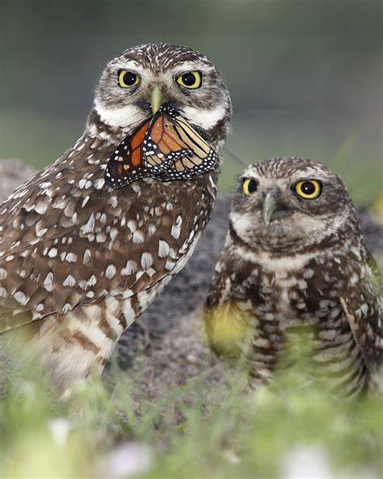
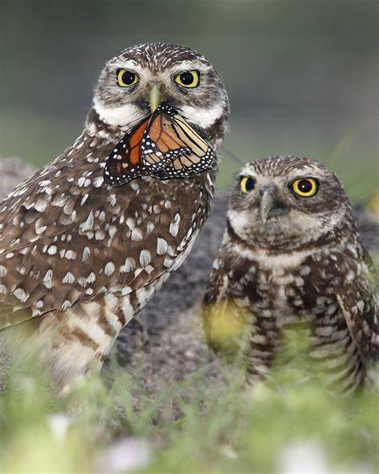

Burrowing Owl
 

The Burrowing Owl (*Athene cunicularia*) is a small, ground-dwelling owl, with long legs and brown bodies without any tufts. They lived in the grasslands of central and southwestern canada and southern United States, Mexico, and South America.(Sahaer, 2022, para 5)
most of the diet of theburrowing owls consists of invertebrates as well as small vertebrates such as lizards, birds, and mammals. these birds can hunt during day or night and can fly, hover or dash near the ground capturing their pray with their talons.
How are we losing them? the author of the article burrowing owls, explained this as"As shortgrass prairie habitats are converted to agricultural cultivation, habitat loss and fragmentation are the primary causes of the decrease in the burrowing owl population. Farmers’ efforts to minimize the number of ground squirrels, prairie dogs, and insects imply fewer burrows for nesting and less prey to feed on. Furthermore, chemicals that control insects, ground squirrels, and foxes can poison owls when they consume the carcasses! Carbofuran, a powerful insecticide used to eliminate grasshoppers, one of the owls’ principal food sources, is of special concern. By preying on eggs and young, badgers, foxes, skunks, weasels, and snakes can significantly reduce nesting success, while coyotes and red-tailed hawks prey on adults."(Sahaer, 2022, para. 8)
these species have now been classifies as endangered are now being protected under the law in canda and special protection of mexico
refernce - Sahaer. 2022. Burrowing owls – Why is their population decreasing? Source/Publisher.https://seeds.ca/schoolfoodgardens/burrowing-owls-why-is-their-population-decreasing/